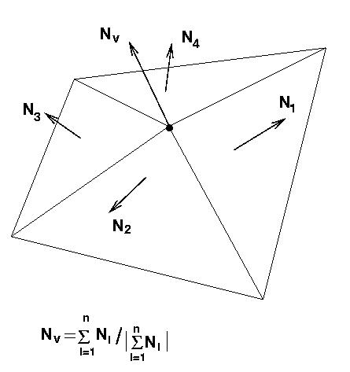

El procediment es basa en el càlcul d'unes normals fictícies en els vèrtexs de l'aresta que substituïran a la normal real que els correspondria d'acord amb el polígon al que pertanyen. Usualment es pren com a nova normal el promig de les normals de les cares que comparteixen l'aresta a suavitzar. La figura il·lustra el mètode a utilitar.
|  |